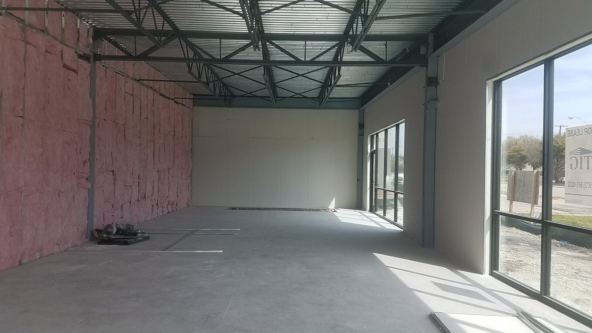
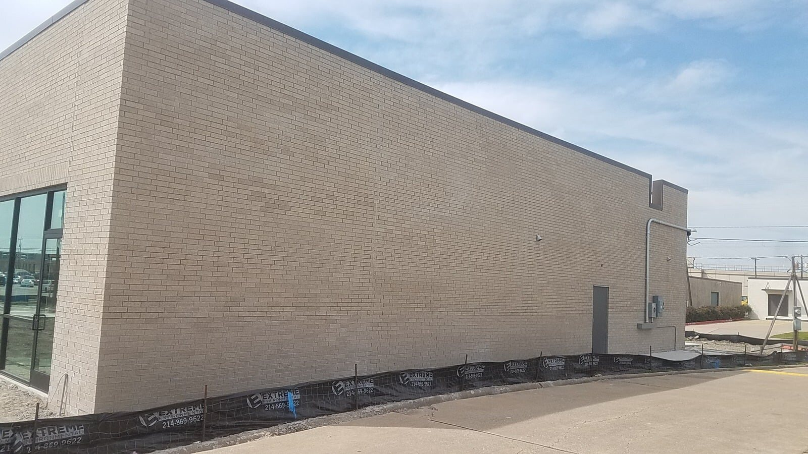
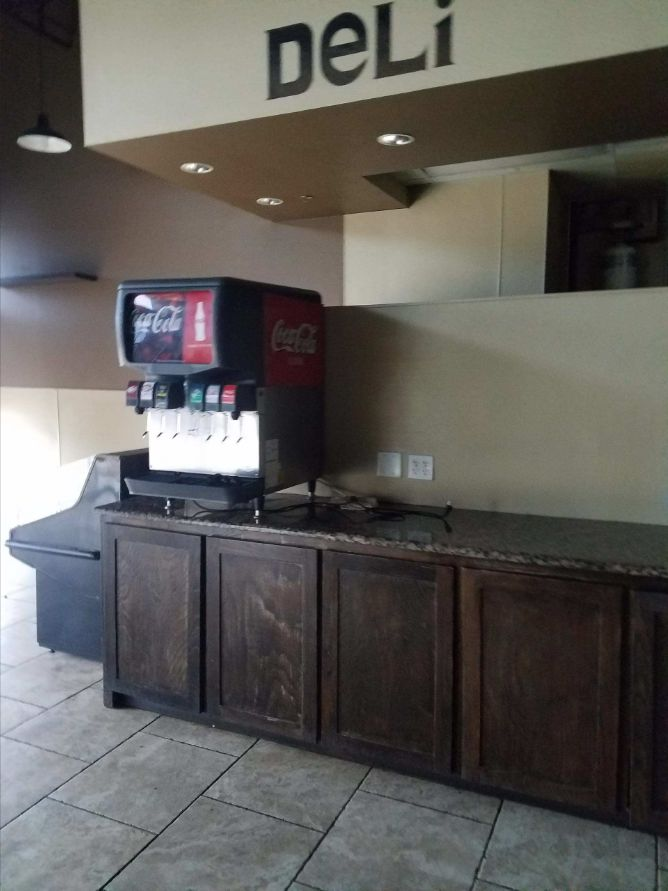

Dallas-Fort Worth Commercial Contractor
Commercial Construction, Build-Outs & Repairs in DFW
Office remodeling, tenant finish-outs, retail improvements, repairs and coordinated construction for commercial properties.
Coordinated Commercial Work
Commercial Projects Need Clear Scope and Sequencing
Commercial remodeling is often less about a single trade and more about getting several trades to work in the correct order. We review the existing space, access, operating conditions, finish requirements and construction priorities before work begins.
Luna General Contractors can coordinate framing, drywall, ceilings, paint, flooring, carpentry, doors and other interior construction work for offices, retail properties and light-commercial spaces.
Request Your EstimateProject Planning
Keeping Commercial Improvements Practical
A commercial scope may involve correcting damage, updating finishes, adapting a space for a new tenant or improving accessibility. We identify which trades are actually required, what must happen first and which existing materials can remain.
For occupied properties, sequencing can be planned around access and business operations when the project allows it. For vacant spaces, the work can be organized around an efficient construction sequence from demolition through finish work and final cleanup.
Real Projects
Commercial Construction Project Photos
Real commercial interiors, exterior construction and site work by Luna General Contractors.




Service Areas
Commercial Construction Across Dallas-Fort Worth
We serve commercial property owners, managers and businesses across the Metroplex, including Dallas, Fort Worth, Arlington, Mansfield, Midlothian, Waxahachie and Weatherford. See our service areas for additional cities.
Commercial FAQ
Questions About Commercial Construction
What types of commercial projects do you handle?
We handle office remodeling, tenant finish-outs, retail improvements, commercial repairs, ADA-related improvements and coordinated interior construction.
Can you coordinate multiple trades on one commercial project?
Yes. We can coordinate framing, drywall, painting, flooring, carpentry and other construction trades as part of one project scope.
Do you work on occupied commercial spaces?
Depending on the project, we can plan work around access, business operations and sequencing requirements to reduce disruption.
Free Estimate
Planning a Commercial Construction Project?
Call Luna General Contractors for commercial remodeling and repairs throughout Dallas-Fort Worth.